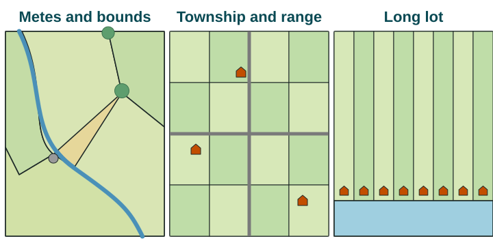
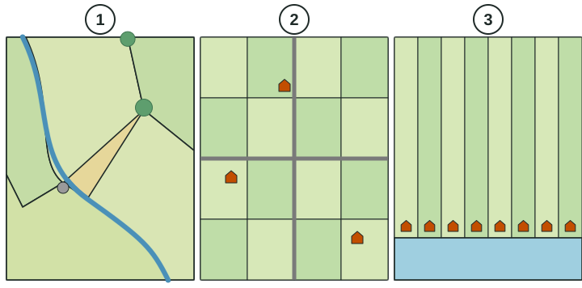

Settlement Patterns and Survey Methods
Rural settlements are clustered, dispersed or linear.
Part 1 · Hook
Why this matters
Part 2 · Before you start
What this builds on
Part 3 · Prerequisite check
Quick check before you start
1. Points on a map that are close together show which pattern?
- Clustering
- Dispersal
- Distance decay
- Diffusion
Show the answer
Clustering means things are close together; dispersal means they are spread out.
- Correct: Clustering:
- Dispersal:
- Distance decay:
- Diffusion:
2. Which kind of agriculture puts many inputs into each hectare?
- Intensive agriculture
- Extensive agriculture
- Nomadic herding
- Ranching
Show the answer
Intensive agriculture uses much labor, money and equipment on each unit of land.
- Correct: Intensive agriculture:
- Extensive agriculture:
- Nomadic herding:
- Ranching:
Part 4 · See it
See it first

Part 5 · Step by step
How it works, step by step
- The Land Ordinance of 1785 divided western land into square sectionsland was sold to single families in squares
- Each family built its house on the land it boughtfarmhouses spread out, one on each farm
- Homes spread out across the gridthe US Midwest has a dispersed settlement pattern
Part 6 · Key ideas
Key ideas
- Rural settlement patterns: clustered (homes in a village, as in many English villages), dispersed (one home on each farm, as in Iowa) and linear (homes along a river or road, as along the Nile in Egypt).
- Survey methods: metes and bounds (natural features, irregular shapes; Virginia), township and range (a square grid; Kansas and Iowa) and long lots (narrow strips from a river; Quebec and Louisiana).
- The survey method is how land was divided; the settlement pattern is where people live. The first often shaped the second.
Part 7 · Misconception
A common mistake
The wrong idea: Long lot and township and range are kinds of settlement patterns.
What actually happens: They are survey methods for dividing land. Clustered, dispersed and linear are the settlement patterns, and a survey method can lead to one of them.
Part 8 · Check yourself
Check yourself
Exam-style questions. Anything you miss goes into your review queue.
Image
Three ways of dividing farmland, seen from above

1. Which panel shows the township and range system?
- Panel 2
- Panel 1
- Panel 3
- Panels 1 and 3 together
Show the answer
Township and range divides land into a grid of squares, so fields and roads meet at right angles.
- Correct: Panel 2: Right: panel 2 is a grid of equal squares with straight roads, the mark of township and range.
- Panel 1: Panel 1 has odd-shaped fields that follow a stream and markers such as a tree and a rock: metes and bounds.
- Panel 3: Panel 3 has long, narrow strips running back from a river: long lots.
- Panels 1 and 3 together: Neither panel 1 nor panel 3 is a grid: look for the equal squares.
2. Which panel most likely shows farmland along the St. Lawrence River in Quebec, Canada, first divided by French settlers?
- Panel 1
- Panel 2
- Panel 3
- Panels 1 and 2 equally
Show the answer
The long lot system gave each family a narrow frontage on the river, the main road of the time, and a long strip running inland.
- Panel 1: Panel 1 shows metes and bounds, used in colonies such as Virginia, not in French Quebec.
- Panel 2: Panel 2 shows the US township and range grid.
- Correct: Panel 3: Right: French settlers divided land into long lots, each with a narrow river front.
- Panels 1 and 2 equally: Neither has the long, narrow strips running from a river that French settlement left.
3. Why did the method in panel 3 give each farm a narrow strip instead of a square?
- So that the farms would match the squares of a grid
- So that fields could follow the shapes of trees and rocks
- So that roads could cross the farms at right angles to each other
- So each farm could reach the river for water and travel
Show the answer
Long lots gave every farm a share of the most valuable thing nearby, river access, which is also why the houses line up along the river.
- So that the farms would match the squares of a grid: Equal squares are the goal of township and range, panel 2.
- So that fields could follow the shapes of trees and rocks: Following natural features is metes and bounds, panel 1.
- So that roads could cross the farms at right angles to each other: Roads at right angles mark the grid in panel 2.
- Correct: So each farm could reach the river for water and travel: Right: the river was the highway and water source, so each lot was cut to give every family a piece of riverbank.
4. Panel 1 shows boundaries that follow a stream and use a tree and a rock as corners. In which part of the United States is this method most common?
- The Midwest and West, in states such as Kansas and Iowa
- The East, in states such as Virginia and Kentucky
- Louisiana bayous first settled by French farmers
- Alaska, where the land was first surveyed by satellite
Show the answer
Metes and bounds describes land by distances and natural landmarks. It was the method of the eastern colonies, so their field patterns are irregular.
- The Midwest and West, in states such as Kansas and Iowa: Kansas and Iowa were surveyed later with the township and range grid.
- Correct: The East, in states such as Virginia and Kentucky: Right: metes and bounds was used in the original colonies and some states formed from them.
- Louisiana bayous first settled by French farmers: French settlement in Louisiana left long lots, panel 3.
- Alaska, where the land was first surveyed by satellite: Satellite surveying is not one of the three methods shown.
5. In Egypt, most villages stretch along the Nile and the canals beside it, with houses in long lines. What best explains this linear pattern?
- The government divided the land into a square grid of sections
- Herders moved their homes with the seasons along the river
- Villages were built for defense on hilltops away from the river
- People settle near the water that makes farming possible in the desert
Show the answer
A linear settlement follows a line on the land: here, the Nile and its canals in the desert.
- The government divided the land into a square grid of sections: A square grid fits township and range, which leads to dispersed farms, not lines.
- Herders moved their homes with the seasons along the river: Most Egyptian farmers in the Nile valley live in fixed homes, not moving herds.
- Villages were built for defense on hilltops away from the river: Hilltop villages for defense would be clustered and away from the water.
- Correct: People settle near the water that makes farming possible in the desert: Right: the river and canals bring water to crops, so homes line up along them.
6. Why do farms in Virginia often have irregular shapes, while farms in Iowa are mostly squares?
- Virginia has a desert climate that makes square fields hard to irrigate
- Iowa farmers practice shifting cultivation and move their fields
- Virginia was divided into long lots by French settlers along its rivers
- They were surveyed at different times with different methods
Show the answer
Survey methods leave a lasting mark. Colonial metes and bounds left irregular parcels in Virginia; the 1785 grid left squares across Iowa.
- Virginia has a desert climate that makes square fields hard to irrigate: Virginia has a wet climate; the shapes come from how the land was first divided.
- Iowa farmers practice shifting cultivation and move their fields: Iowa has mixed crop and livestock farming on fixed fields.
- Virginia was divided into long lots by French settlers along its rivers: Long lots fit French settlement in Quebec and Louisiana, not Virginia.
- Correct: They were surveyed at different times with different methods: Right: Virginia used metes and bounds in colonial times; Iowa was later surveyed by township and range.
Part 9 · Summary
Summary
Part 10 · Up next
What comes next
Part 11 · Connections